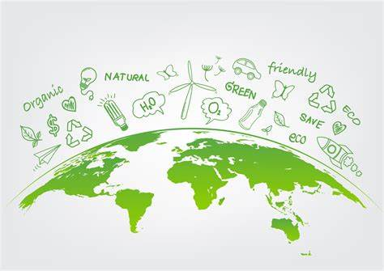

O cultivo sustentável desempenha um papel essencial na preservação do meio ambiente, na segurança alimentar e no desenvolvimento de comunidades rurais prósperas. Ele equilibra a produção de alimentos com a conservação dos recursos naturais, promovendo a biodiversidade, o manejo responsável do solo e o uso eficiente da água.
Isso resulta em benefícios ambientais, como a preservação da biodiversidade e a redução da erosão do solo, além de promover a segurança alimentar ao aumentar a resiliência das culturas. Além disso, o cultivo sustentável fortalece as comunidades rurais ao proporcionar oportunidades de renda, melhorar a qualidade de vida dos agricultores e promover a conexão com os consumidores locais.